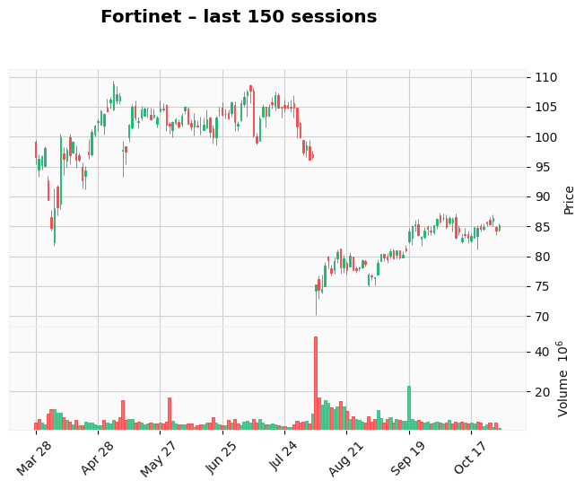

Foxorox AI Market Forecast – 2025-10-30
Automatically generated summary from today's AI analysis.
Top 2 Stocks
CCoStar looks slightly bullish, as the recent sharp drop could trigger a small rebound today or in the next sessions. But be careful — never try to catch a falling knife.
On couple next sessions stock may perform well. It start to build bulish trend. In the near futre it is possible that will close gap formed few days ago.
- CoStar Group – Gap: 61.60%, Candle: white (65.36%)

- Synopsys – Gap: 44.02%, Candle: white (62.62%)
